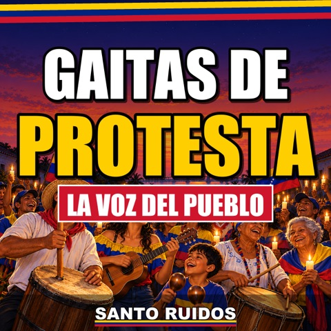

Canciones y letras de Santo Ruidos
Todas nuestras gaitas de protesta 2026, con letra completa y video. 47 canciones publicadas.
Suscríbete en YouTubeEscúchalo en Apple MusicTambién en Amazon MusicTambién en SpotifyY en DeezerÁlbum en YouTube MusicTambién en TIDALTambién en Pandora

Álbum · 22 canciones
Gaitas de Protesta: La Voz del Pueblo
22 gaitas zulianas de protesta: la luz que se va, los enchufados, las maletas de Delcy y un pueblo que no se calla.
- Se Llevaron a Nicolás (Y Se Fue la Luz)3:59
- Nos Dejaron la Hoja3:59
- Bolichico Premiado4:29
- Llegó Sin un Kiosco3:59
- Lo Que Sirve Es el Enchufe3:59
- Revolución Bonita4:01
- Puro Letrero3:50
- Su Cara con Mi Plata3:59
- Se Fue Nicolás (Y la Luz También)3:28
- El del Mazo4:00
- Echando Broma3:59
- La Ruleta de la Luz4:00
- El Aguinaldo de 15 Centavos3:59
- El Reloj de Delcy3:59
- Muy Verde3:59
- La Cacerola es mi Furro3:59
- 22 Trimestres3:59
- La Puerta Giratoria3:59
- Sentado en el Petróleo3:59
- La Foto de Delcy3:59
- La misma oscuridad4:00
- La Maleta al Revés3:59
Álbum · 25 canciones
Gaitas de Protesta: La Voz del Pueblo, Vol. 2
Las gaitas nuevas de 2026: memoria, presos políticos, diáspora, maestros, Navidad y el orgullo de cada región, de Maracaibo a los Andes, Oriente, Caracas, el llano y Falcón.
- No Olvidamos3:26
- Tenemos el Paraíso3:51
- ¿Y la Plata Dónde Está?3:18
- Mansas Palomas3:45
- A Limpiar Pocetas4:00
- Ojo con el Camaleón3:23
- Pasaporte Vencido3:48
- La Vacuna3:50
- Amnistía con Tobillera3:58
- Quinientos Seis3:57
- ¿Que lo Supere?3:33
- Amanecer Gaitero2:56
- Misa de Aguinaldo2:54
- La Carta al Niño Jesús2:55
- El Estreno2:52
- Maracucho Hasta la Médula2:55
- Larense de Pie3:15
- Oriente con Sabor3:32
- Caraqueño de Barrio3:06
- Coleando3:22
- Médano y Chivo3:17
- Un Venezolano en Cualquier Parte3:01
- ¡Devuélvase!2:53
- Mi Abuela Jubilada2:52
- Andino Callado3:19
Más letras de gaitas
Lee más letras de gaitas venezolanas nuevas: cada letra completa, verso por verso, con su video.